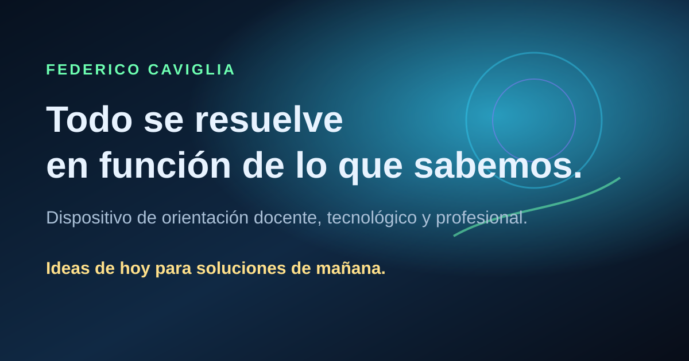

Modo 1
Curador
Analiza ideas, proyectos, ZIPs, carpetas o textos. Clasifica el material como activo, terminado, demostrativo, histórico, en desarrollo o disponible para financiación, mejora, edición, adaptación o implementación acompañada.
Sistema interno de curaduría
El portal no se sostiene solamente con páginas: necesita criterio. Esta sección documenta los primeros agentes internos que ayudan a clasificar proyectos, preparar textos públicos, separar lo reservado y transformar materiales dispersos en orientación posible.

Primer agente implementado
El Bot Curador es un agente interno de organización, documentación y criterio institucional. Su función no es vender proyectos de forma directa, sino ayudar a decidir cómo ingresan al ecosistema, dónde se ubican, qué partes pueden publicarse y qué aspectos conviene reservar.
Trabaja sobre proyectos, carpetas, ZIPs, enlaces, textos, ideas, capturas y materiales de trabajo. A partir de ese insumo, produce una lectura curada: clasificación, ubicación sugerida, descripción pública, tareas pendientes y advertencias de tono.
Modo 1
Analiza ideas, proyectos, ZIPs, carpetas o textos. Clasifica el material como activo, terminado, demostrativo, histórico, en desarrollo o disponible para financiación, mejora, edición, adaptación o implementación acompañada.
Modo 2
Revisa estructura web, HTML, CSS, JavaScript, GitHub, Netlify, enlaces, carpetas, metadatos, accesibilidad básica y necesidades de Open Graph o vista previa para WhatsApp.
Modo 3
Convierte proyectos en fichas, README, textos para el portal, descripciones institucionales, versiones breves para circulación y documentación reutilizable.
Reglas del sistema
Los agentes funcionan como filtros de criterio. No todo debe publicarse del mismo modo, no todo debe presentarse como servicio y no toda mejora debe regalarse si corresponde a una implementación financiada.
Usar lenguaje docente, profesional y abierto a colaboración, evitando una presentación excesivamente comercial.
Separar descripción pública, evidencias, metodología y materiales internos o sensibles.
Todo proyecto web debe contemplar título, descripción, imagen horizontal y vista previa para WhatsApp.
Diferenciar mesa actual, proyectos terminados, archivo histórico y líneas disponibles para desarrollo.
Mantenerlo como línea joven o experimental, sin desplazar el centro narrativo del recorrido docente y profesional.
Presentar mejoras, adaptaciones y desarrollos como procesos posibles, no como entregas automáticas sin contexto.
Forma de uso
El sistema puede usarse con órdenes breves. La clave es indicar el modo de trabajo y entregar el material que se quiere procesar. Para iniciar el circuito operativo, el formulario permite cargar proyectos, enlaces o descripciones para su revisión curatorial.
Formulario Curador: cargar un proyecto para que ingrese al sistema de revisión.
Bot Curador, modo curador: analizá este proyecto y decime cómo entra al ecosistema.
Bot Curador, modo técnico web: revisá este index.html y detectá faltantes.
Bot Curador, modo documentador: prepará una ficha pública para este proyecto.
Próximas extensiones
La primera implementación deja abierta la arquitectura para sumar nuevos modos cuando el ecosistema lo necesite.
Ordenamiento de carpetas, PDFs, colecciones desordenadas, duplicados, nombres de archivo e índices de uso.
Control específico de miniaturas, títulos, descripciones, imágenes horizontales y circulación digital.
Lectura didáctica de proyectos, actividades, competencias, secuencias y recursos para el aula.
Preparación de propuestas como desarrollos financiables, mejoras posibles o implementaciones acompañadas.